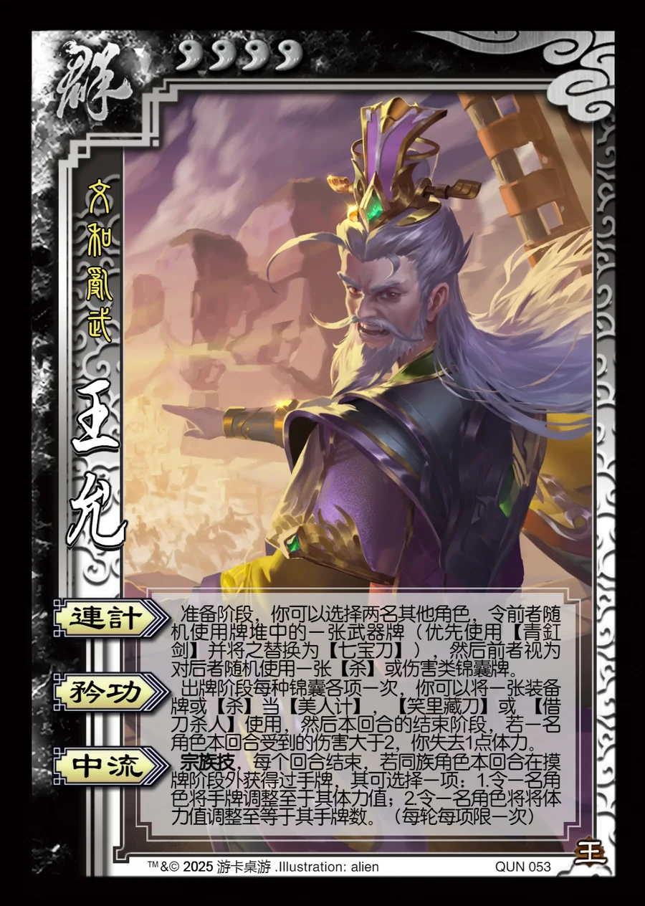

点击卡面查看大图
群
族王允
♥4文和乱武
连计
准备阶段，你可以选择两名其他角色，令前者随机使用牌堆中的一张武器牌（优先使用【青釭剑】并将之替换为【七宝刀】），然后前者视为对后者随机使用一张【杀】或伤害类锦囊牌。
矜功
出牌阶段每种锦囊各项一次，你可以将一张装备牌或【杀】当【美人计】，【笑里藏刀】或 【借刀杀人】使用，然后本回合的结束阶段，若一名角色本回合受到的伤害大于2，你失去1点体力。
中流宗族技
宗族技，每个回合结束，若同族角色本回合在摸牌阶段外获得过手牌，其可选择一项：1.令一名角色将手牌调整至于其体力值；2.令一名角色将将体力值调整至等于其手牌数。（每轮每项限一次）